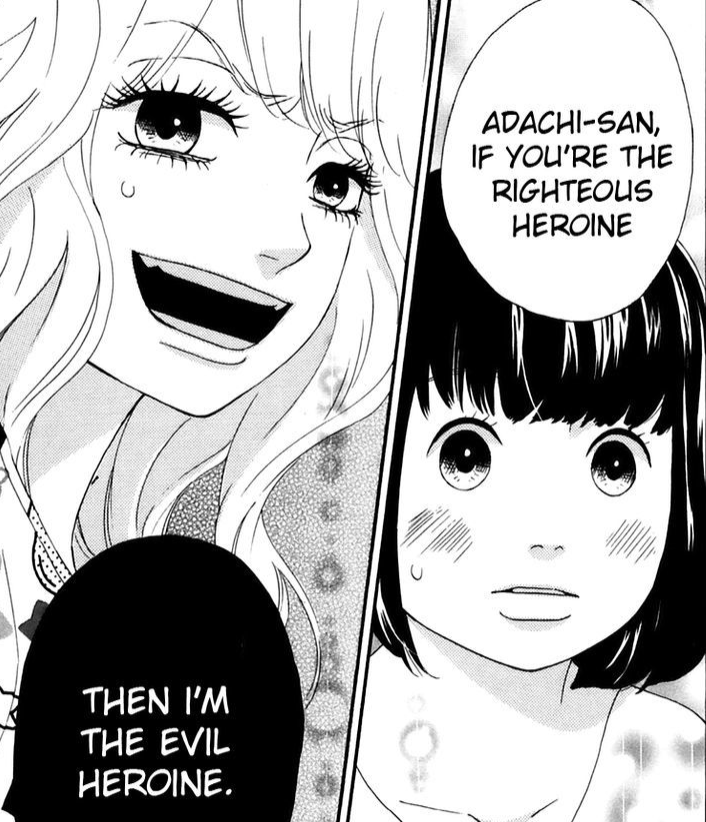
Hitori is my number 1 BEST_GIRL! She's expressive, bold, childish, blunt, and determined.
These characteristics help form her into the perfect jealous psychopath... In the manga, she's characterized as the 3rd wheel +
childhood friend that's trying to steal back the boyfriend. She's basically set up for up to fail. However, as the TRUE heroine she is,
Hitori takes the neceesarry steps, mostly malicious steps, in order to destroy that Adachi-loser and upgrade from a supporting role. I
don't think anything Hitori did was very ethical nor moral, but because of the way she approached the situation and expressed herself,
it felt very HONEST. :)
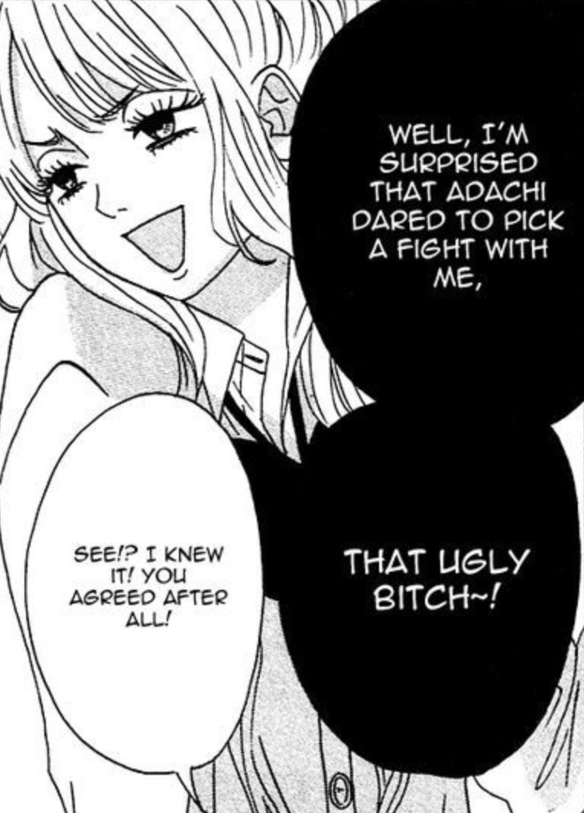
The GOAT being the GOAT
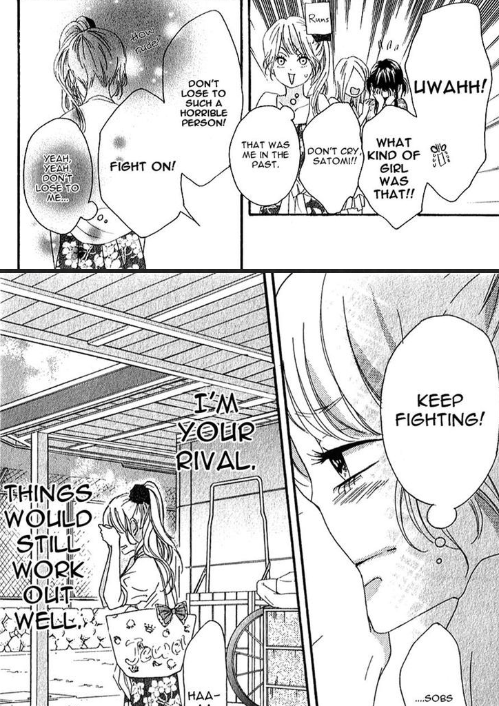
The GOAT being HONEST
How to ruin the GOAT's image
2) HOTaru(Netsuzou Trap - NTR)
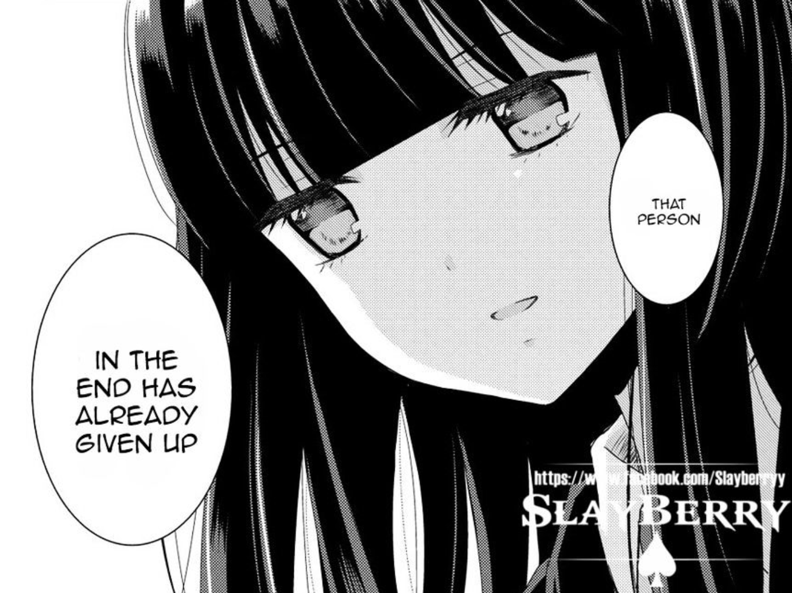
Hotaru can only be described with 2 words: dirty and hot, mostly dirty. The only reason Hotaru is so high up in my list is because of how dirty she is.
If Hotaru was in a regular romance she would probably be catagorized as the "whore," but because she's in a Yuri, a lesbian romance which should 100% be wholesome,
she becomes a Goddess of Dirtiness. Although Hotaru's whole thing is about doing the MC and the audience dirty, her end-objective was legnedary: prostitute self in
order to have enough money to run away from the beta-ass MC. On a side note, I loved her dark glossy hair when I first saw it. It gave off the impression that she
didn't really belong in the story's setting and she was going to be mischievous. (Netsuzou Trap > Citrus)
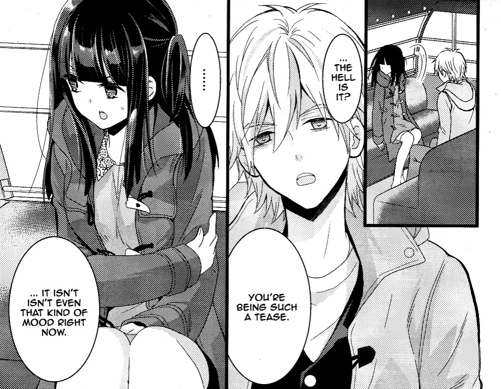
If anyone asks me out, I'ma use this line...
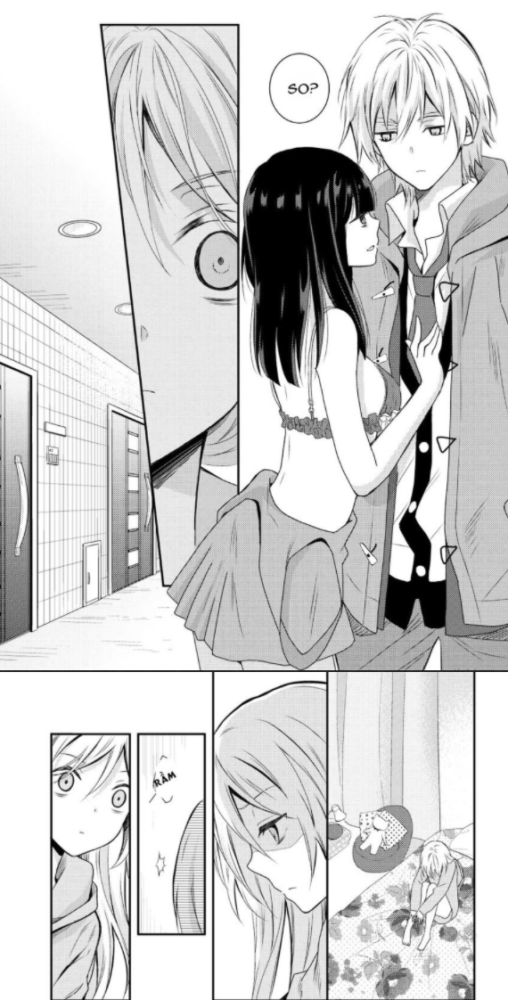
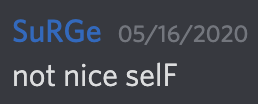
How to tell a girl that you're not interested.
3) Asuka(Neon Genesis Evangelion)
Definately my most favorite anime girl out there. Until the introduction of Asuka, Eva had a very dark somber tone that was really unsettling for me. So, when Asuka appeared, she
brought a more light-hearted feel to Eva which helped remove the notion that Eva was going to purely just be about being emo/edgy. Although Asuka's story in the main series ends in a
very depressing way, I loved it compared to anyone else's in Eva. Everyone had a consistant depressing aura around them and all their stories mostly end in the same tone. But for Asuka,
she starts of as a Goddess then ends up in the most pathetic spot known as the bathtub scene. Asuka was done dirty which made me cry, but it's because she was done dirty that I love her.
I think a big portion of why I loved Asuka's character at the end was because of her scenes in EoE, End of Evangelion: Fap scene was 10/10, battle scene had the most horrifying scream I've
ever heard(next to Mr. Moon), and beach scene was disturbing yet beautiful.
YOU GO ASUKA! Tell that pathetic MC what's up!
Yall are DED to me.
3.33) Asuka(Rebuild)
Not the biggest fan of Asuka in the Rebuilds: heavily romanced and super badass. There were moments in the main series of Asuka being romanced and being badass, but in the Rebuilds,
I felt like it was a little too much. Most of the time, I was just saying "What is even happening?!" However, I do like the Rebuild movies and the concept around them. It's just that
they're too focused on Shinji so my main girl, Asuka, doesn't get a real story/plot so I'm sad. #NotMyAsuka
4) Lucy(Elfen Lied)
Lucy has a weird spot in my heart. Because she has multiple personalities throughout the anime, it's hard to really say if I like Lucy or just one of her personalities: kid-psycho Lucy,
Nyuu, killer Lucy, and romance Lucy. So, I'll just say that I like her because of her crazy dynamic. If I had to pick though, I'd say kid-psycho Lucy is the best. The anime has a few cute
moments in it, but my favorite cute moment was when kid Lucy and Kouta are at the zoo. This scene is suppose to be really happy and cute since its like a date between the 2, but because
they knew it would be the last day they see each other, they continued to think about that fact and the potentially cute scene became very depressing. Although it was kinda depressing, I
found it to the most heart-warming scenes in the whole anime. As for the other Lucys, I kinda liked them but kid-psycho Lucy had the coolest personality and the best scenes.
Little sisters are for plebs.
lucyg3905 > lilyg3905
5) Qing Ling(Demons and Strangers)
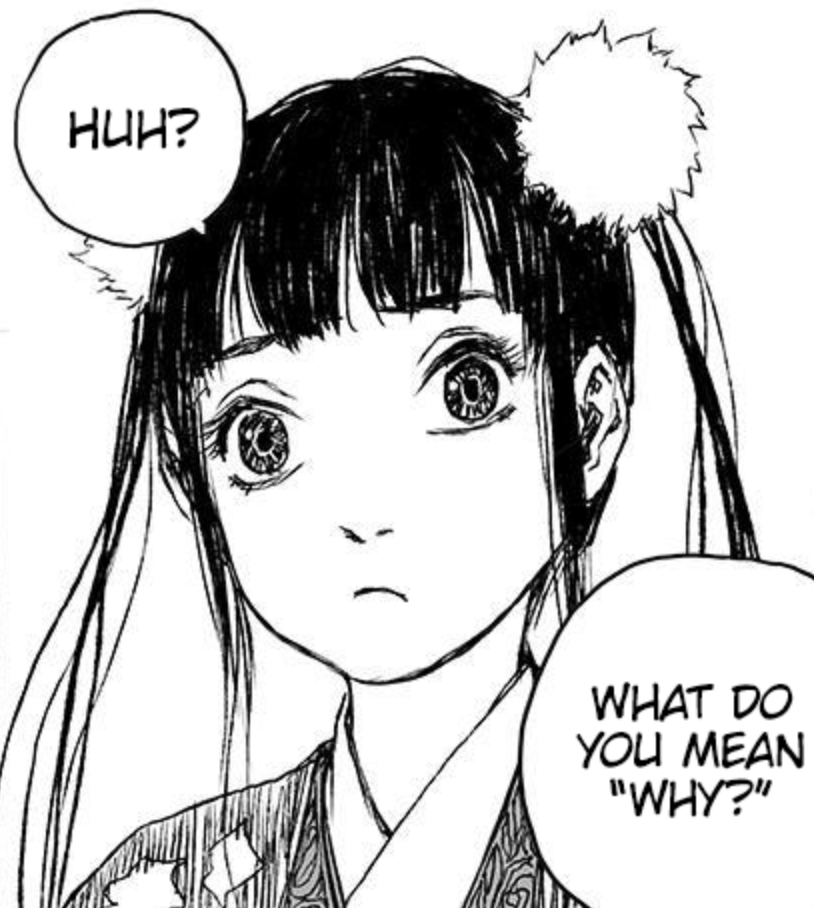
I don't know much about Qing Ling since she's only had brief appearances in the manga, but when she does appear, she's fucking dazzling. I'm not a big fan of badass characters as most of
the time they come off as nonsensical; however, for Qing Ling, I loved how she was badass because it ties in so well with her story which revolves around the ideas of freedom, individualism,
and identity. For example, whenever Qing Ling does a badass action it's always shown as her fufilling a primative desire or doing it off a whim. It's very interesting because Qing Ling is a
demon who named herself and is all about breaking away from the norms; however, she herself indulges in desires that demons would only like. Definately one of the coolest character dynamics
I've seen. Once more of her story comes out or when her story finishes, Qing Ling will probably become my number 1 BEST-GIRL.
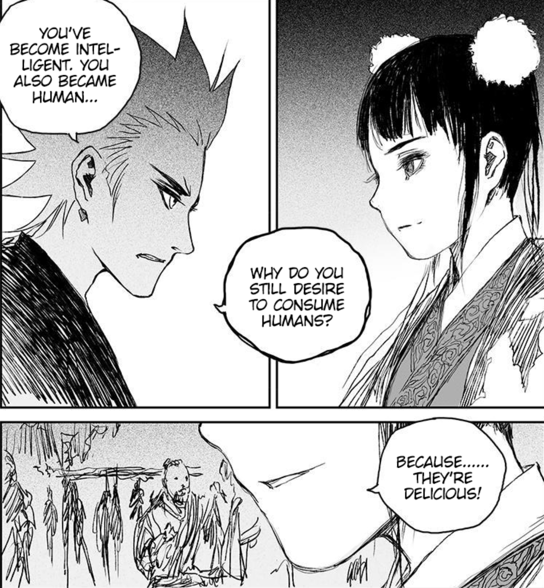
Badass Response
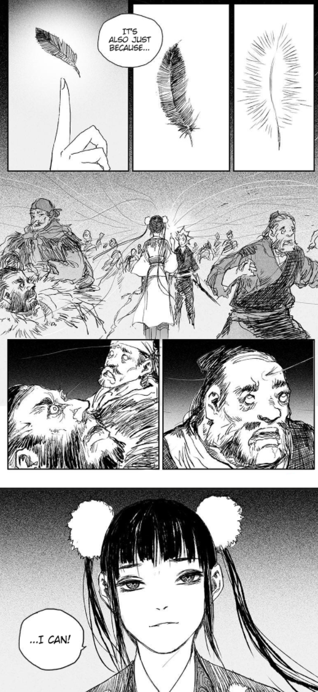
Badass Powers
6) Lain(Serial Experiment Lain)
Lain is irl me: got hooked to the internet and can only communicate through the internet now. It's somewhat self-deprecating to say, but after waiting Lain I became overly aware of this fact...
Anyways... back to why Lain is one of my best girls... uhh she doesn't have the looks, but she got a cool story: instead of a descent into madness, its a descent into the maddenning world called
the internet... Not gonna lie, only reason Lain is here is because of much of a connect I felt for her character... a little 2 real for me....
Really cool/ominous shadows
How I try to get someone's attention
7) Sato(Happy Sugar Life)
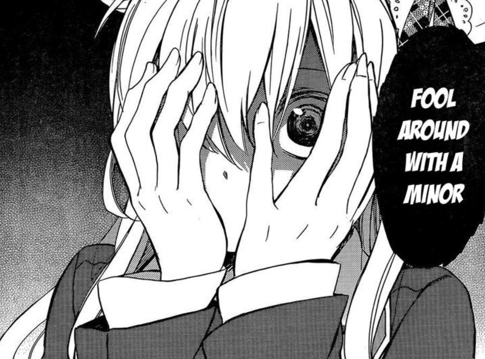
Sato is definately on the crazy side, but that just gives her bonus points. If you're reading up to this point, you'll probably notice a little trend between my best girls: they're proactive in
their own story. Crazy + Proactive = Yandere. Being a yandere is seen as a bad thing, but honestly, they make for some good story telling. I like to see my characters at their lowest and highest
because feel more for them. So, the yandere moments showed Sato at her lowest and being with Shio was mostly her highest. Being yandere also shows the instability of a character, reminds me of
Kaneki from TG. Anyways, I just wanted to say that even though Sato was a yandere, Happy Sugar Life was able to make a crazy-psychopath character very compelling. On a side note, Sato is lowest
on the list mostly because her whole character is about an obsession. I'm ok with obessions, but I like my characters/best-girls to have some individualism and/or have their own goals that don't
involve pleasing others (debatable to say if Sato was just fufilling her OWN happiness through forcing someone else).
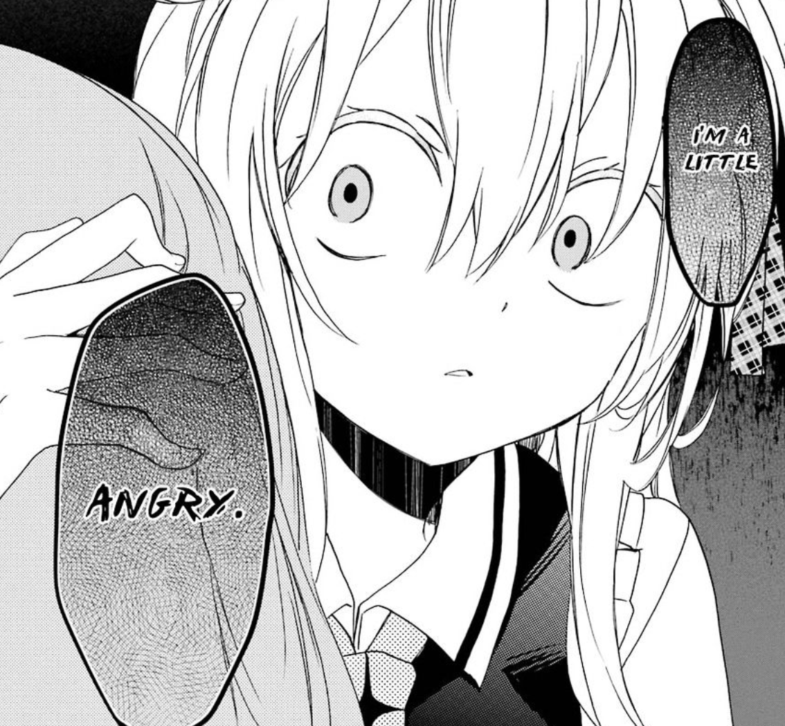
GOMF
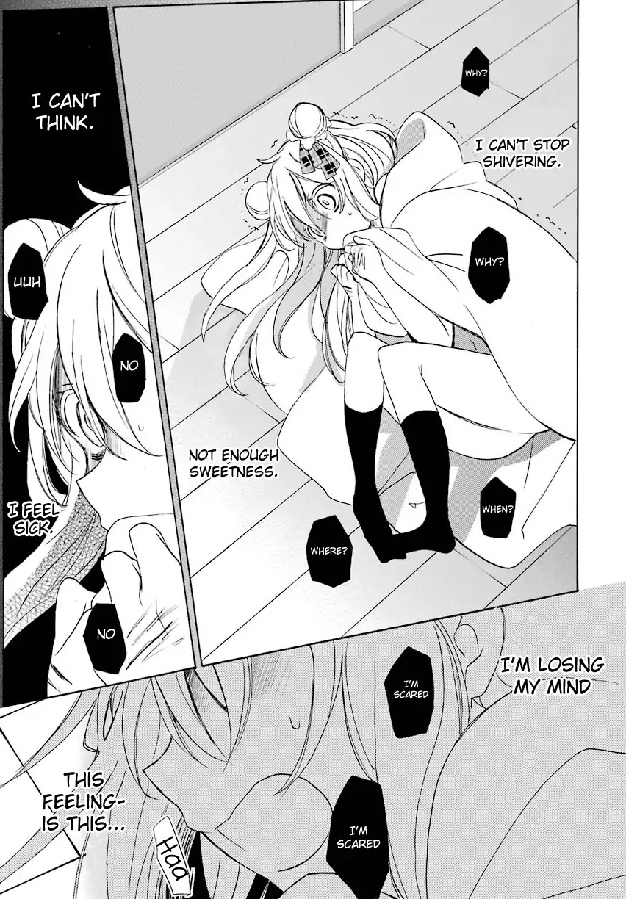
Centipede in my ear?!